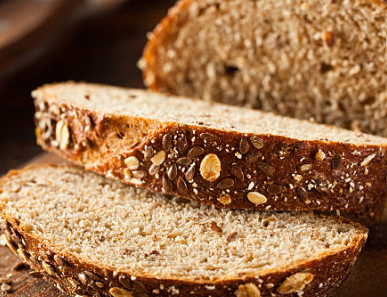
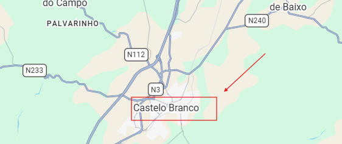

O Nosso Processo Artesanal
🌾 1. Moagem
🥣 2. Amassar
⏳ 3. Repouso
🔥 4. Forno
Padaria Tradicional

Pão de Massa-Mãe
Ingredientes: Farinha de trigo biológica, água, massa-mãe natural e sal marinho.
Preparação: Fermentação lenta de 24 horas e cozedura em soleira de pedra.

Pão de Centeio
Ingredientes: Farinha de centeio integral, água, massa-mãe de centeio e sal.
Preparação: Amassadura suave, fermentação prolongada no frio e côdea firme.

Pão de Milho
Ingredientes: Farinha de milho tradicional, farinha de trigo de força, água e fermento.
Preparação: Escaldão prévio do milho ao estilo da fronteira e cozedura lenta.

Pão Integral 100%
Ingredientes: Farinha de trigo 100% integral com todo o grão, água e sal marinho.
Preparação: Repouso em bloco para desenvolver aromas e cozedura macia.
Pastelaria e Bolaria

Croissant Artesanal
Ingredientes: Farinha de força, manteiga pura, açúcar e fermento.
Preparação: Folhado à mão com várias camadas e cozido até dourar.

Pastel de Creme
Ingredientes: Massa folhada fina, creme pasteleiro artesanal aromatizado com canela e limão.
Preparação: Base cozida até ficar estaladiça e recheio frio para manter a cremosidade.

Suíços de Açúcar
Ingredientes: Massa de brioche macia, água de flor de laranjeira, ovo e açúcar pérola por cima.
Preparação: Dupla fermentação manual para um miolo muito fofo e cozedura rápida.

Palmeira de Chocolate
Ingredientes: Massa folhada artesanal invertida, açúcar caramelizado e cobertura de chocolate puro.
Preparação: Estendido e dobras tradicionais, cozedura intensa e banho quente de chocolate.
Empadas Caseiras

Empada de Atum Galega
Ingredientes: Massa de pão estaladiça, refogado tradicional de cebola, pimentos e atum.
Preparação: Recheio caseiro temperado e cozido lentamente para unir os sabores.

Empada de Carne Picada
Ingredientes: Farinha de trigo, carne de vaca selecionada, cebola, ovo cozido e especiarias.
Preparação: Guisado de carne em lume brando, com o ponto certo de suculência antes de ir ao forno.

Empada de Bacalhau com Passas
Ingredientes: Massa artesanal, bacalhau desfiado e demolhado, cebola estufada e passas doces.
Preparação: Contraste agridoce tradicional, montado à mão e cozido em forno de pedra.

Empada de Frango e Cogumelos
Ingredientes: Massa fina estaladiça, peito de frango desfiado, cogumelos e refogado suave.
Preparação: Recheio cremoso selado com o lacre artesanal da casa e dourado na perfeição.
Onde nos Encontrar
📍 Morada: Av. da Raia, S/N - Fronteira Luso-Espanhola
| 📞 Telefone: | +34 900 000 000 |
|---|---|
| ✉️ Email: | migas_amigas@gmail.com |
| 🌐 Facebook: | /migasamigas |
| 📸 Instagram: | @migas_amigas |
